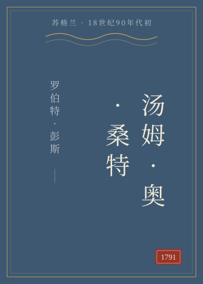

汤姆·奥·桑特
一、基本信息
| 作者 | 罗伯特·彭斯 |
|---|---|
| 成书/出版 | 1791年（Britannica B299：汤姆·奥·桑特——1791，mock-heroic） Robert Burns — Encyclopaedia Britannica（百科全书） |
| 国别/地区 | 苏格兰 |
| 时代 | 近代 · 18世纪90年代初 |
| 体裁 | 长诗 |
| 语言 | 苏格兰语 |
《汤姆·奥·桑特》鬼夜结构图（主题·结构图）
二、创作背景
Britannica（B299）：Tam o' Shanter——1791——mock-heroic（模仿英雄体）。
Britannica（B299）：彭斯——苏格兰民族诗人（作者页交叉）。
题材（通说待核）：汤姆酒醉夜归——教堂里巫鬼的狂欢与被追逐。
三、内容脉络
（通说待核）汤姆从酒馆夜归遇鬼。
（通说待核）'剪短的尾巴'：巫婆追过桥。
四、主要人物表
| 人物 | 身份 | 说明 |
|---|---|---|
| 汤姆 | 醉汉 | （通说待核） |
| 南妮 | 巫婆 | （通说待核） |
五、主题与艺术特点
- 苏格兰民间鬼话（通说待核）。
- mock-heroic 的滑稽史诗（B299）。
- '故事'与'教训'的插叙（通说待核）。
六、影响与评论
- Britannica：Tam o' Shanter (1791)——mock-heroic（B299）。
Robert Burns — Encyclopaedia Britannica（百科全书） - Britannica：彭斯诗歌地位（B299 作者页）。
Robert Burns — Encyclopaedia Britannica（百科全书）
七、阅读建议
难点
- 苏格兰方言。
- mock-heroic 的反讽。
- 《汤姆·奥·桑特》中译本（人民文学等——通说待核）。
- 苏格兰语原版（公有领域）。
彭斯叙事诗首选；与《一朵红红的玫瑰》对读。
八、待核实
- 南妮人名核对（通说）。
- 1791年写作（致Francis Grose信说）待核。
- '剪尾'细节待核。